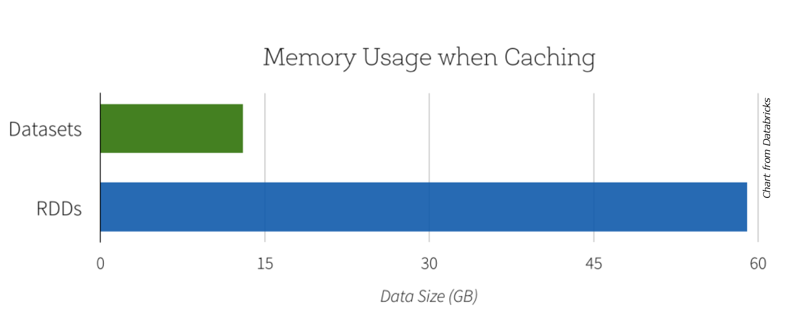
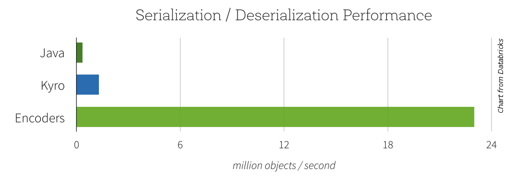

RDDs, DataFrames and Datasets in
Brian Clapper, @brianclapper
RDDs are...
... compile-time type-safe
... lazy.
... based on the Scala collections API, so the operations are familiar to Scala programmers.
So much so, in fact, that it can be confusing to new users:
Return a new RDD that contains all matching values by applying f.
Return an array that contains all of the elements in this RDD.
RDDs: Some code
This blob of code creates an RDD from a file on a distributed file system.
val rdd = sc.textFile("hdfs:/user/bmc/wikipedia-pagecounts.gz")
val parsedRDD = rdd.flatMap { line =>
line.split("""\s+""") match {
case Array(project, page, numRequests, _) => Some((project, page, numRequests))
case _ => None
}
}
parsedRDD.filter { case (project, page, numRequests) => project == "en" }.
map { case (_, page, numRequests) => (page, numRequests) }.
reduceByKey(_ + _).
take(100).
foreach { case (page, requests) => println(s"$page: $requests") }
RDDs
RDDs are type-safe. However, they're also low-level, and they suffer from some problems, including:
- They express the how of a solution better than the what.
- They cannot be optimized by Spark.
- They're slow on non-JVM languages like Python.
- It's too easy to build an inefficient RDD transformation chain.
parsedRDD.filter { case (project, page, numRequests) => project == "en" }.
map { case (_, page, numRequests) => (page, numRequests) }.
reduceByKey(_ + _). <--- INEFFICIENT
filter { case (page, _) => ! isSpecialPage(page) }. <--- ORDERING
take(100).
foreach { case (project, requests) => println(s"project: $requests") }
The DataFrame API
The DataFrame API provides a higher-level abstraction (a DSL, really), allowing you to use a query language to manipulate data. In fact, you can use SQL, as well.
This code does essentially the same thing the previous RDD code does. Look how much easier it is to read.
val df = parsedRDD.toDF("project", "page", "numRequests")
df.filter($"project" === "en").
groupBy($"page").
agg(sum($"numRequests").as("count")).
limit(100).
show(100)
The DataFrame API
SQL code
Here's the same thing in SQL.
df.registerTempTable("edits")
sqlContext.sql("""|SELECT page, sum(numRequests) AS count FROM edits
|WHERE project = 'en'
|GROUP BY page LIMIT 100""".stripMargin)
.show(100)
DataFrame queries are optimized
Example Optimization
users.join(events, users("id") === events("uid"))
.filter(events("date") > "2015-01-01")
DataFrames are faster
Because of the optimization, they tend to outperform RDDs.

But we've lost type safety
What happens if we call the collect() action?
scala> :type df.collect()
Array[org.apache.spark.sql.Row]
Unfortunately, Row isn't typesafe. It's defined as
trait Row extends Serializable
Mapping it back to something useful is ugly and error-prone:
df.collect().map { row =>
val project = row(0).asInstanceOf[String] // Yuck.
val numRequests = row(1).asInstanceOf[Long] // Yuck.
}
What do we want?
Enter Datasets
Datasets are:
- Part of the DataFrame API
- Conceptually similar to RDDs. (You can use lambdas and types again.)
- Use Tungsten's fast in-memory encoding (as opposed to JVM objects or serialized objects on the heap)
- Expose expressions and fields to the DataFrame query planner, where the optimizer can use them to make decisions. (This can't happen with RDDs.)
- Interoperate more easily with the DataFrame API
- Available in Spark 1.6 as an experimental API preview. (They're a development focus for the next several Spark versions.)
Enter Datasets
Like an RDD, a Dataset has a type.
// Read a DataFrame from a JSON file
val df = sqlContext.read.json("people.json")
// Convert the data to a domain object.
case class Person(name: String, age: Long)
val ds: Dataset[Person] = df.as[Person]
// |----------|
In Spark 2.0, a DataFrame is just a Dataset[Row].
Datasets: A bit of both
With Datasets, you can still access a DataFrame-like query API. (You can also go back and forth between DataFrames and Datasets.)
RDDs:
val lines = sc.textFile("hdfs://path/to/some/ebook.txt")
val words = lines.flatMap(_.split("""\s+""")).filter(_.nonEmpty)
val counts = words.groupBy(_.toLowerCase).map { case (w, all) => (w, all.size) }
Datasets:
val lines = sqlContext.read.text("hdfs://path/to/some/ebook.txt").as[String]
val words = lines.flatMap(_.split("""\s+""")).filter(_.nonEmpty)
val counts = words.groupByKey(_.toLowerCase).count()
Datasets: A bit of both
// RDD
val counts = words.groupBy(_.toLowerCase).map { case (w, all) => (w, all.size) }
// Dataset
val counts = words.groupByKey(_.toLowerCase).count()
The Dataset version can use the built-in DataFrame-like
count() aggregator function.
The Dataset code is slightly more visually compact (less typing! yay!) and will tend to execute faster than the RDD counterpart (with caveats...)
Datasets and Memory
Datasets tend to use less memory.
- Spark understands the structure of data in Datasets, because they're typed.
- Spark uses encoders to translate between these types ("domain objects") and Spark's compact internal Tungsten data format.
- It generates these encoders via runtime code-generation. The generated code can operate directly on the Tungsten compact format.
- Memory is conserved, because of the compact format. Speed is improved by custom code-generation.
Space Efficiency
Datasets and Serialization
Spark has to serialize data ... a lot.
- Because of the efficiency of the code-generated encoders, serialization can be significantly faster than either native Java or Kryo serialization.
- The resulting serialized data will often be up to 2x smaller, as well, which reduces disk use and network use.
Datasets and Serialization
Some Dataset Limitations
- They're not especially useful for Python.
- They can still be slower than DataFrames (because of the lambdas).
-
In some cases, RDD lambdas may still be faster than the equivalent
Dataset lambda.
- If the JVM isn't garbage-collecting, then RDDs might be faster, because they operate directly on JVM objects. Once the JVM starts GC, though, Dataset lambdas will tend to be faster (because the data lives outside the heap).
- (The Spark developers think they can fix this problem.)
- The term "Datasets" is kind of hard to Google...
Enough, already...
Let's look at some code.
More resources (1)
- This presentation will be posted on the PHASE web site, scala-phase.org.
- The code is at https://github.com/bmc/rdds-dataframes-datasets-presentation-2016
-
In the
demodirectory of the GitHub repo, there's anotebooks.dbcfile you can load into Databricks Community Edition. You'll then get the two notebooks in the demo, and you can try them yourself.
More resources (2)
- Watch Michael Armbrust's talk Structured Spark: DataFrames, Datasets, and Streaming, from Spark Summit West 2016. Video is here: https://youtu.be/1a4pgYzeFwE
- Watch Michael Armbrust's fun living coding demo, analyzing tweets related to the 2016 election, from Spark Summit West 2016. Video: https://youtu.be/fn3WeMZZcCk?t=1067
-
Read
Introducing Spark Datasets (Databricks blog post):
https://databricks.com/blog/2016/01/04/introducing-spark-datasets.html -
Dig into the
Spark SQL, DataFrames and Datasets Guide:
http://spark.apache.org/docs/latest/sql-programming-guide.html
Try Apache Spark with Databricks
Try the latest version of Apache Spark and the preview of 2.0. http://databricks.com/try